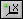
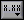

Use the scale legend to label scales and configure scale properties on a graph or chart. Right-click the graph or chart and select Visible Items�Scale Legend from the shortcut menu to view the scale legend.
Use the Operating tool to click the Scale Lock button, shown as follows, to toggle autoscaling for each scale.
Use the Autoscale button, shown as follows, to adjust the scale to reflect the data you wire to the graph or chart.

Use the Scale Format button, shown as follows, to configure the format, precision, and mapping mode, set the visibility of the scale and scale label, and specify the grid color.

You also can use the scale legend to add multiple y-scales to the graph or chart. Use the Positioning tool to expand the scale legend to add a y-scale to the graph or chart. Click anywhere in the scale legend row to activate the scale.